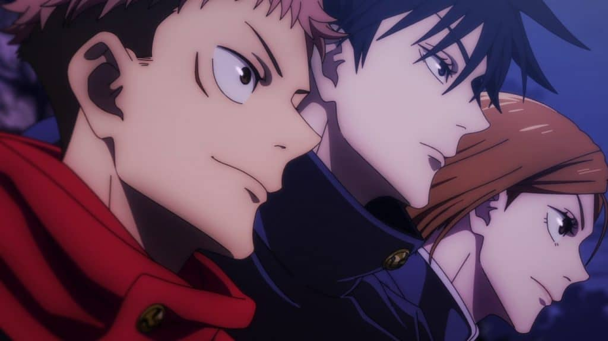
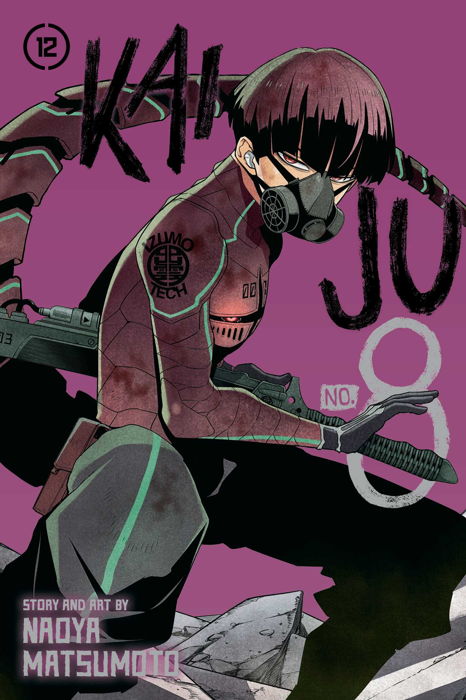

<!DOCTYPE html>
<html lang="pt-br">
</html>
<head>
    <meta charset="UTF-8">
    <meta name="viewport" content="width=device-width, initial-scale=1.0">
    <link rel="shortcut icon" href="img/favicon.ico" type="image/x-icon">
    <link rel="stylesheet" href="estilo/style.css">
    <title>Greek Anime</title>

    <link href="https://cdn.jsdelivr.net/npm/bootstrap@5.3.3/dist/css/bootstrap.min.css" rel="stylesheet" integrity="sha384-QWTKZyjpPEjISv5WaRU9OFeRpok6YctnYmDr5pNlyT2bRjXh0JMhjY6hW+ALEwIH" crossorigin="anonymous">

</head>
<body>
    
    <nav class="navbar navbar-expand-lg text-bg-secondary p-3" style="padding: 10px 50px;">
        <div class="container-fluid">
          <a class="navbar-brand" href="#" style="color: #fff;">Greek Anime</a>
          <button
            class="navbar-toggler"
            type="button"
            data-bs-toggle="collapse"
            data-bs-target="#navbarSupportedContent"
            aria-controls="navbarSupportedContent"
            aria-expanded="false"
            aria-label="Toggle navigation"
          >
            <span class="navbar-toggler-icon"></span>
          </button>
            <div class="justify-content-end" id="navbarSupportedContent">
                <ul class="navbar-nav me-auto mb-2 mb-lg-0">
                    <li class="nav-item">
                        <a class="nav-link active" aria-current="page" href="#" style="color: #fff;">Inicio</a>
                    </li>
                    <li class="nav-item">
                        <a class="nav-link" href="#" style="color: #fff;">Contacto</a>
                    </li>
                    <li class="nav-item">
                        <a class="nav-link" href="#" style="color: #fff;">Sobre</a>
                    </li>
        
                    <!-- <li class="nav-item">
                        <button
                        type="button"
                        class="btn btn-outline-light"
                        style="height: 40px; border-radius: 20px"
                        >
                        Entrar
                        </button>
                    </li> -->
                </ul>
            </div>
        </div>
    </nav>
  

    <div id="carouselExampleDark" class="carousel carousel-dark slide">
        <div class="carousel-indicators">
          <button type="button" data-bs-target="#carouselExampleDark" data-bs-slide-to="0" class="active" aria-current="true" aria-label="Slide 1" style="background-color: #fff;"></button>
          <button type="button" data-bs-target="#carouselExampleDark" data-bs-slide-to="1" aria-label="Slide 2" style="background-color: #fff;"></button>
          <button type="button" data-bs-target="#carouselExampleDark" data-bs-slide-to="2" aria-label="Slide 3" style="background-color: #fff;"></button>
        </div>
        <div class="carousel-inner">
          <div class="carousel-item active" data-bs-interval="10000">
            
            <div class="carousel-caption d-none d-md-block" style="color: #fff;">
              <h5>Kimetsu no Yaiba</h5>
              <p>A vida de Tanjiro é abalada por uma tragédia quando sua família é brutalmente assassinada por um demônio. A única sobrevivente é sua irmã mais nova, Nezuko, que, por sua vez, é transformada em um demônio. Determinado a encontrar uma cura para Nezuko e vingar a morte de sua família, Tanjiro decide se tornar um caçador de demônios..</p>
            </div>
          </div>
          <div class="carousel-item" data-bs-interval="2000">
            
            <div class="carousel-caption d-none d-md-block" style="color: #fff;">
              <h5>Jujutsu Kaisen</h5>
              <p>A história gira em torno de Yuji Itadori, um jovem com uma força física incrível que, por acaso, ingere um dos dedos de Ryomen Sukuna, um dos mais poderosos demônios.</p>
            </div>
          </div>
          <div class="carousel-item">
            
            <div class="carousel-caption d-none d-md-block" style="color: #fff;">
              <h5>Solo Leveling</h5>
              <p>Adaptação de uma webtoon coreana, conta a história de Sung Jin-woo, um jovem que se torna um “player” após sobreviver a uma masmorra perigosa.</p>
            </div>
          </div>
        </div>
        <button class="carousel-control-prev" type="button" data-bs-target="#carouselExampleDark" data-bs-slide="prev">
          <span class="carousel-control-prev-icon" aria-hidden="true"></span>
          <span class="visually-hidden">Previous</span>
        </button>
        <button class="carousel-control-next" type="button" data-bs-target="#carouselExampleDark" data-bs-slide="next">
          <span class="carousel-control-next-icon" aria-hidden="true"></span>
          <span class="visually-hidden">Next</span>
        </button>
    </div>


    <section class="tendencia">
        <div class="interface">
            <h2 class="titulo">TENDENCIAS ATUAIS</h2>
            <div class="flex grid-container">
                <div class="card especial-box">
                    
                    <div class="card-body">
                      <h3 class="card-title">Solo Leveling</h3>
                      <p class="card-text">Adaptação de uma webtoon coreana, conta a história de Sung Jin-woo, um jovem que se torna um “player” após sobreviver a uma masmorra perigosa.</p>
                      <a href="#" class="btn btn-primary">Saiba mais</a>
                    </div>
                </div>

                <div class="card especial-box">
                    
                    <div class="card-body">
                      <h3 class="card-title">Dan Da Dan</h3>
                      <p class="card-text">Mistura comédia, ação e drama em uma história de invasão alienígena e assombraçõe</p>
                      <a href="#" class="btn btn-primary">Saiba mais</a>
                    </div>
                </div>

                <div class="card especial-box">
                    
                    <div class="card-body">
                      <h3 class="card-title">Kaiju No. 8</h3>
                      <p class="card-text">Adaptação do mangá de Naoya Matsumoto, conta a história de Kafka Hibino, um jovem que luta para se alistar na Força de Defesa do Japão</p>
                      <a href="#" class="btn btn-primary">Saiba mais</a>
                    </div>
                </div>
    
            </div>
        </div>
    </section>

    <section class="lista">
        <div class="interface">
            <h2>Mais Vistos</h2>
            <div class="flex">
                <ul class="list">
                    <li id="list1"><a href="#">Dragon Ball</a> </li>

                    <article id="ls1">
                        <p>
                            Dragon Ball é uma das franquias de anime e mangá mais populares e influentes do mundo, criada pelo talentoso Akira Toriyama. A história, repleta de ação, comédia e aventura, acompanha Goku, um jovem saiyan com um coração puro e uma força incrível, em sua jornada para coletar as lendárias Esferas do Dragão e realizar seus desejos. A série oferece uma experiência emocionante e cheia de reviravoltas.
                        </p>
                    </article>

                    <li id="list2"><a href="#">Naruto</a></li>

                    <article id="ls2">
                        <p>
                            Naruto é uma das séries de anime e mangá mais populares do mundo, criada por Masashi Kishimoto. A história acompanha a vida de Naruto Uzumaki, um jovem ninja que busca reconhecimento e o sonho de se tornar Hokage, o líder da sua vila, Konohagakure.
                        </p>
                        <p>
                            Desde o nascimento, Naruto foi rejeitado pela vila por ser a reencarnação da Nove-Caudas, uma poderosa criatura demoníaca selada dentro dele. Isolado e solitário, Naruto buscava desesperadamente a aprovação dos outros e a chance de provar seu valor
                        </p>
                    </article>

                    <li id="list3"><a href="#">One Piece</a></li>

                    <article id="ls3">
                        <p>
                            One Piece é uma das séries de mangá e anime mais populares e longas do mundo, criada por Eiichiro Oda. A história acompanha Monkey D. Luffy, um jovem pirata que sonha em se tornar o Rei dos Piratas e encontrar o tesouro lendário, o One Piece.
                        </p>
                        <p>
                            Luffy, um garoto de borracha com um coração puro e um espírito aventureiro, embarca em uma jornada épica pelos mares, formando sua própria tripulação pirata, os Piratas do Chapéu de Palha. Juntos, eles enfrentam perigos, descobrem ilhas exóticas e fazem amigos por onde passam.
                        </p>
                    </article>

                    <li id="list4"><a href="#">Jujutsu Kaisen</a></li>

                    <article id="ls4">
                        <p>
                            A história gira em torno de Yuji Itadori, um jovem com uma força física incrível que, por acaso, ingere um dos dedos de Ryomen Sukuna, um dos mais poderosos demônios. Ao fazer isso, Yuji se torna um recipiente para a maldição e é forçado a entrar no mundo da feitiçaria jujutsu para proteger seus amigos e a humanidade.
                        </p>
                    </article>

                    <li id="list5"><a href="#">One-Punch Man</a></li>

                    <article id="ls5">
                        <p>
                            One-Punch Man é uma série de mangá e anime que satiriza o gênero de super-heróis, apresentando um protagonista absurdamente poderoso que derrota qualquer adversário com um único soco. A história acompanha Saitama, um homem comum que, após um intenso treinamento físico, se tornou tão forte que a luta perdeu toda a emoção para ele.
                        </p>
                    </article>

                    <li id="list6"><a href="#">Castlevania</a></li>

                    <article id="ls6">
                        <p>
                            Castlevania é uma franquia icônica de jogos eletrônicos, conhecida por sua atmosfera gótica, personagens memoráveis e jogabilidade desafiadora. Criada pela Konami, a série acompanha a batalha entre a família Belmont, caçadores de vampiros, e o poderoso Conde Drácula.
                        </p>
                    </article>
                </ul>
            </div>
        </div>
    </section>


    <footer class="footer">
        <div class="footer-container">
          <div class="footer-section">
            <h4>Sobre nós</h4>
            <p>Somos uma plataforma dedicada a oferecer os melhores animes para otakus.</p>
          </div>
          <div class="footer-section">
            <h4>Links úteis</h4>
            <ul>
              <li><a href="#">Início</a></li>
              <li><a href="#">Contacto</a></li>
              <li><a href="#">Política de Privacidade</a></li>
            </ul>
          </div>
          <div class="footer-section">
            <h4>Contato</h4>
            <p>Email: adilson.gregoo@gmail.com</p>
            <p>Telefone: (244) 947-873-180</p>
          </div>
        </div>
        <div class="footer-bottom">
          <p>&copy; 2025 Greek Anime. Todos os direitos reservados.</p>
        </div>
    </footer>


    <script src="script/script.js"></script>


    <script src="https://cdn.jsdelivr.net/npm/bootstrap@5.3.3/dist/js/bootstrap.bundle.min.js" integrity="sha384-YvpcrYf0tY3lHB60NNkmXc5s9fDVZLESaAA55NDzOxhy9GkcIdslK1eN7N6jIeHz" crossorigin="anonymous"></script>

</body>
</html>